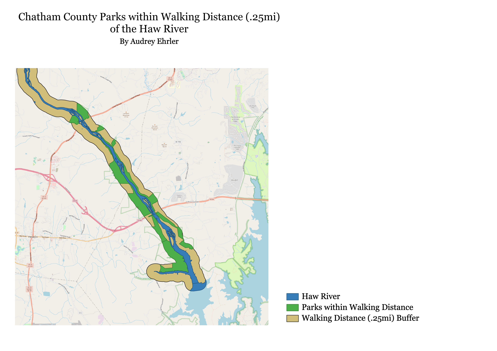

What parks are within walking distance of the Haw River in Chatham County?
I decided to focus on parks near the Haw River since I enjoy canoeing in it and I support accessible recreational activities
for the river. The data here is just for the park boundaries around Chatham County. I first defined walking distance as
.25 miles, and made the buffer around the river equivalent to that distance. Then, I used the intersect tool with a park
boundaries shapefile to see which parks were within that distance. I also clipped the shapefile of the waterbodies to only
include the Haw River since the other waterbodies made a more distracting image
.
